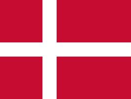

Projecten
Op deze pagina is er te lezen wat voor projecten wij gedaan hebben
Jammer genoeg kan ik niet al te veel laten zien, omdat al mijn huiswerk weg is zonder een goede reden. Gelukkig weet ik het nog wel in mijn hoofd en kan ik het tenminste nog beschrijven.
Een voorbeeld van een erg leuk project was het "mondriaan project", het was erg leerzaam en ik had het gevoel alsof ik echt iets deed wat veel impact gaf op de "website" die ik aan het bouwen was.
We hebben ook een keer vlaggen moeten maken, zoals de vlag van nederland,duitsland, denmarken en Noorwegen, hier kan ik wel een foto laten zien hoe de vlaggen er een beetje uitszien zodat er wel te zien is wat het doel van de les was.

Natuurlijk is dit ook een opdracht, en hier heb ik wel bewijs van, namelijk dat de webstie werkt en dat u erop kan zitten en mij beter leert kennen. ik schrijf dit als laatst en ik ben heel erg trots met wat het is geworden, ik had nooit verwacht dat het zo eruit zou zien omdat ik geen vertrouwen had. Na een tijdje dingen doen pakte ik de draadjes op en ging goed aan de slag met een prima resultaat al zeg ik het zelf!